n8n Rehberi
Ekran görüntüleriyle desteklenmiş, derste yanınızda açık kalacak otomasyon kaynağı.
Bu kaynak, n8n dersinde gösterilen kısa rehberleri tek bir sitede toplar. Bölümler kendi başına okunabilir; derste ilgili başlığa geçip ekran görüntülerini takip etmeniz için tasarlandı.
Kaynak notların özgün sırası, başlık yapısı, ekran görüntüleri ve GIF destekleri korunmuştur. Doğrudan öğrenci hitabı, sistem kuralına uygun şekilde siz diliyle düzenlenmiştir.
Başlangıç ve Arayüz
n8n mantığı, hesap açma, arayüz ve ilk workflow fikri.
1- n8n Nedir?
n8n, kod yazmadan otomasyon oluşturmanızı sağlayan bir platformdur. İş akışları (workflows) kurar, bu iş akışlarında her adımı bir kutucuk (node) olarak tanımlarsınız. Mantığı çok basit:
“Bir olay olursa → şunu yap”.
💬 Örnek: Her sabah saat 9’da bana Telegram’dan “Günaydın” mesajı gönder.
Hesap Oluştur: n8n.cloud
Tarayıcınızdan https://n8n.cloud’a gidin. “Sign Up” butonuna tıklayarak ücretsiz bir hesap oluştur.
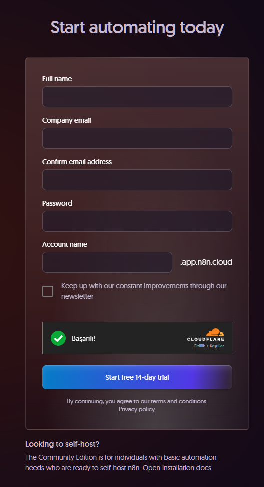
Workflow başlamadan önce gel, ara yüzü tanıyalım. Her şeyi kuracağınız bu ekran, sizin dijital çalışma masanız olacak.
Yeni Workflow Başlat
Giriş yaptıktan sonra sağ üstte yer alan “Create Workflow” butonuna tıklayın. Merak etmeyin her şeyi detaylı bir şekilde inceleyeceğiz. Ara yüzü tanımak için buradan başlayalım.
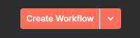
Bu işlemi yaptığınızda artık çalışma ekranındasınız. Ve muhtemelen aşağıdaki gibi bir şeyler görüyorsunuz. n8n’de işlemlerinizi gerçekleştirdiğiniz bu alanın adı Editor UI. Burada workflow’larınızı oluşturabilir, node'ları birbirine bağlayınyabilir ve sisteminizi test edebilirsiniz.
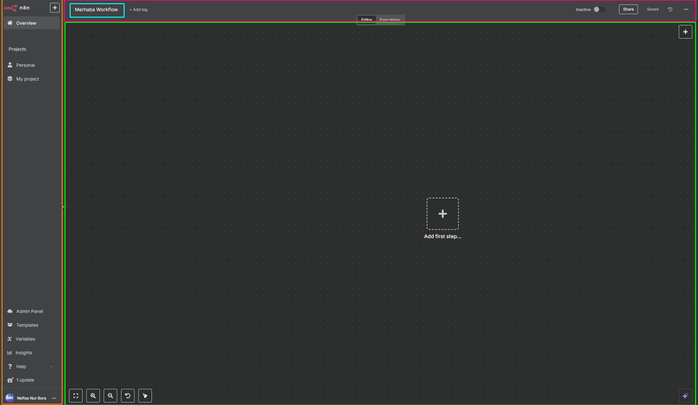
Sol Panel – Kontrol Merkezi
Ekranın sol tarafındaki turuncu ile işaretlediğim panel, workflow yönetiminin merkezidir. Peki "" Sol Panelde" neler var?
| Overview | Tüm workflow’larına ve kayıtlı API bağlantı bilgilerine buradan erişebilirsiniz. |
| Projects | Workflow’ları gruplamak için kullanılır. (Personal ve My Project gibi) |
| Admin Panel | n8n Cloud kullanıcıları için kullanım, fatura ve erişim ayarlarının olduğu kısım. |
| Templates | Hazır workflow örnekleri. Başlangıç için ilham verici ve zaman kazandırır. |
| Variables | (Pro/Enterprise planlarda) Workflow'lar arasında kullanılabilecek sabit verileri tutar. |
| Insights | Çalışma istatistikleri ve genel kullanım bilgileri burada gösterilir. |
| Help | Yardım dokümanları, topluluk bağlantıları ve destek kaynaklarına ulaşmanızı sağlar. |
| 1 update | Uygulama ile ilgili güncellemeler burada görünür. |
| Kullanıcı Menüsü | Ekranın en altında sizin adınızı göreceğiniz alan. Ayarlara buradan ulaşabilirsiniz. |
İpucu: Sol paneli gizlemek veya göstermek için en üstteki küçük ok simgesine tıklayabilirsiniz. Böylece ekranda daha fazla çalışma alanı elde edebilirsiniz.
Üst Bar – Workflow’a Ait Ayarlar
Editor ekranının üst kısmındaki pembe ile işaretlediğim alan.
- Workflow’un ismi (varsayılan: _My Workflow_)
- Aktif/Pasif butonu
- Kaydet butonu
- Paylaş (Pro plan) gibi kontroller yer alır.
Canvas – Çalışma Alanı
Kocaman yeşil kutunun içine aldığım ortadaki gri, noktalı arka planlı bölüm sizin canvas alanınız. Tüm node’lar burada yer alır, birbirine bağlayınnır ve çalıştırılır. Yani burası sizin çalışma masanız :)
Canvas üzerinde:
- + butonu ile node ekleyinnir
-
- Zoom yapabilir, hizalama yapılabilir
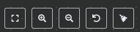
-
- Çalışma alanına sağ tıklayarak notlar eklenebilir
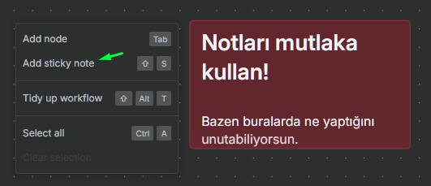
- İlk adımı atmak için “Add first step” kutusu kullanılır. Hazırsanız tıklayın!
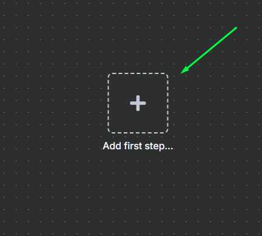
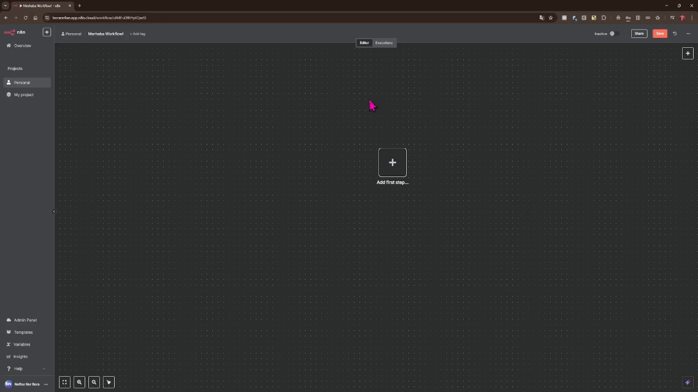
n8n ile Otomasyon 1. Bölüm - Hiçbir Şey Bilmeyenler İçin 1. Bölüm
Otomasyon mu? Kodlama mı? n8n mi?
“Ben bunları hiç duymadım” diyorsanız doğru yerdesiniz.
Bu rehber sizin için yazıldı.
🎓 Bu Rehber Ne İçin?
Bu, "n8n nedir?" sorusundan başlayıp, kendi otomasyonlarınızı kurabileceğiniz seviyeye kadar sizi götürecek bir eğitim serisidir. Her şey sıfırdan, basitçe, parça parça anlatılacak.
Kahvenizi alın, rahatlayın, birlikte öğreneceğiz.
🧠 n8n Nedir?
n8n, otomatik iş yapmayı sağlayan bir araçtır.
- Günlük tekrar eden işleri sizin yerinize yapar.
- “Eğer bu olursa → şunu yap” mantığıyla çalışır.
- Kod bilmeden, tıklayarak akışlar (workflow) oluşturursunuz.
Örnek:
Her sabah saat 9’da size Telegram’dan “Günaydın 🌞” mesajı gelsin.
📦 n8n Ne İşe Yarar?
| Durum | Otomasyon Fikri |
|---|---|
| Form doldurulunca mail gitmesi | Webhook + Email Node |
| Yeni takipçi geldiğinde uyarı | Instagram API + Telegram mesajı |
| Dosya yüklendiğinde kayıt alınması | Google Drive + Notion |
🧰 Bu Eğitime Kimler Uygun?
- Kod bilmiyorsanız ama otomasyon ilginizi çekiyorsa
- “Benim işlerim çok tekrar ediyor” diyorsanız
- “Bir işi bir kere yapayım, sistem hep yapsın” diyorsanız
O zaman bu seri tam size göre.
🛠 Başlamak İçin Ne Gerekir?
- Bilgisayar kullanabiliyor olmanız yeterli.
- Teknik bilgi şart değil.
- İsterseniz kurulum bile yapmadan başlayabilirsiniz!
✅ 1. Adım: En Kolay Kurulum
🔹 Tarayıcınızdan şu adrese gidin: 👉 https://n8n.cloud
🔹 “Sign Up” butonuna tıklayın, kayıt olun. 🔹 n8n paneli otomatik açılacak. 🔹 Her şey hazır, sadece otomasyonunuzu kurmaya başlayın!
Kurulum yapmanıza bile gerek yok! 😌
👀 Sıradaki Bölümde Ne Var?
🔜 2. Bölüm: “Node” Ne Demek?
Otomasyonun LEGO parçaları sizi bekliyor. Her node bir aksiyonu temsil ediyor. Bu işin temel taşı onlar.
Temel Workflow Mantığı
Node, webhook, HTTP request, koşullar ve ilk uygulamalı akışlar.
n8n ile Otomasyon 2. Bölüm - Otomasyon Kurmak
Artık n8n’e giriş yaptık.
Peki herkesin dilindeki bu “node” da ne ola ki?
🔹 Node Nedir? (En Basit Haliyle)
Node, bir işlemi temsil eden kutudur. n8n’deki her işlem bir node’dur.
- “Veri al” → bir node
- “Mesaj gönder” → bir node
- “Bir şeyi kontrol edin” → yine bir node
Düşün: Bir işin her adımı bir kutu. Kutuları birbirine bağlayındık mı iş akışı çalışır!
🧱 Gerçek Hayattan Örnek
Senaryo: Bir form doldurulunca bana mail gelsin.
| Adım | Node Türü | Açıklama |
|---|---|---|
| 1 | Webhook | Form verisini yakalar |
| 2 | E-posta yollar |
👉 Bu işin her adımı bir node. Node’lar sırayla çalışır. İşte buna workflow (iş akışı) diyoruz.
📊 Node Türleri Nelerdir?
n8n içinde yüzlerce node var ama en sık kullanılanlardan bazıları:
| Node Türü | Ne İşe Yarar? |
|---|---|
| Webhook | Dışardan veri alır (form, API vs.) |
| HTTP Request | Dış sistemlere veri gönderir/alır |
| Set | El ile veri oluşturmanızı sağlar |
| Function | Kendi JavaScript kodunuzu yazmanızı sağlar (ileri) |
| E-posta gönderir | |
| Telegram | Telegram botunuz üzerinden mesaj yollar |
| Cron | Belirli saatlerde otomatik çalışır (ör: her sabah) |
🧪 Uygulamalı Örnek: “Günaydın Workflow”
Senaryo: Her sabah saat 9’da bana Telegram’dan “Günaydın!” mesajı gelsin.
- Cron Node → Saat ayarı: Her gün 09:00
- Telegram Node → Hedef kullanıcıya mesaj:
"Günaydın ☀️"
Bu iki node'u birbirine bağlayın → Workflow aktif hale getirin → Artık sistem sabah sizi hatırlıyor 🤖
🧠 İpuçları
- Her node’un kendi ayar paneli vardır. Orada input (girdi) ve output (çıktı) alanları görünür.
- Node'ları sıraya koymak için sürükle-bırak yeterlidir.
- n8n her node arasında neyin geçtiğini görmenizi sağlar (Debug modu).
🎯 Mini Görev
İlk “Node Testini” yap:
-
Setnode’u ekleyin- İçine
"Merhaba dünya"gibi bir metin yazın- Çalıştırın ve çıktıyı inceleyin
Böylece n8n’de “elle veri üretmeyi” öğrenmiş olursunuz.
👀 Sıradaki Bölümde Ne Var?
🔜 3. Bölüm: İlk Kendi Workflow’unu Kur – Sıfırdan, Tıklayarak!
Artık node’ları tanıdığımıza göre kendi iş akışını kurma zamanı geldi. Gerçek bir senaryoyu adım adım kuracağız.
n8n ile Otomasyon 3. Bölüm - İlk Kendi Workflow’unu Kur!
Artık node nedir biliyoruz. Şimdi kendi otomasyonumuzu kurma zamanı geldi.
Adım adım, tıklayarak ilerleyeceğiz. Sıfır kod, sıfır stres.
🎯 Hedef: Form Doldurulunca E-Posta Gitsin
Hayal edin: Bir kullanıcı sizin web sitenizdeki formu dolduruyor. sizin e-postanıza otomatik bilgi geliyor. Tek bir tuşa basmadan.
🧩 Kullanılacak Node’lar
| Node | Görevi |
|---|---|
| Webhook | Formdan gelen veriyi yakalar |
| size e-posta gönderir |
🛠 Adım Adım Kurulum
🔹 1. Adım: Yeni Bir Workflow Oluştur
- n8n paneline girin
- Sol üstten “New Workflow” tıklayın
- Workflow’un adını örneğin:
Form Bilgisi → Mail
🔹 2. Adım: Webhook Node’u Ekle
- “+” işaretine tıklayın
- Webhook node’unu seçin
- Method:
POSTolarak ayarlayın - Webhook URL’yi bir yere kopyalayın (örnek: Zapier gibi formlarda bu URL’ye gönderim yapacağız)
Bu node, dışarıdan gelen form verisini alır.
🔹 3. Adım: Email Node’u Ekle
- “+” işaretine tıklayın
- Email node’unu seçin (SMTP veya Gmail seçebilirsiniz)
- Ayarları doldur:
- Alıcı: kendi e-posta adresiniz
- Konu:
Yeni Form Yanıtı - Gövde: webhook’tan gelen verileri yazın (örneğin
{{$json["isim"]}} size mesaj gönderdi!)
Email node’unun webhook’tan gelen veriyi nasıl kullandığını göreceğiz.
🔹 4. Adım: Node’ları Bağla
- Webhook → Email node’unu okla bağla
- Her iki node’un üstünde “Play” butonuna basarak test moduna geç.
🔹 5. Adım: Test Et
Webhook URL’yi kullanarak test verisi gönder (örneğin Postman veya bir form aracı kullanarak). Başarılıysa: e-posta adresinize bir mesaj gelmiş olacak! 🎉
🧪 Bonus: Basit Form Örneği (HTML)
Aşağıdaki formu kendi web sitenize koyarak test edebilirsiniz:
<form action="WEBHOOK_URLINIZ" method="post">
<input name="isim" placeholder="Adınız">
<input name="email" placeholder="E-posta">
<textarea name="mesaj" placeholder="Mesajınız"></textarea>
<button type="submit">Gönder</button>
</form>
n8n ile Otomasyon 4. Bölüm - Koşullar ve Akıllı Akışlar
Artık otomasyon kurabiliyoruz. Şimdi işleri biraz daha zeki hale getirme zamanı. Her veri aynı değildir, bazen “şu olursa bunu yap, değilse yapma” demeliyiz. İşte şimdi bunu öğreneceğiz.
🎯 Bu Bölümde Ne Öğreneceğiz?
Setnode ile veri oluşturmayı ve düzenlemeyiIFnode ile koşul eklemeyiSwitchnode ile çoklu yol oluşturmayı
🔹 Set Node – “Benim Verim Bu!”
Set node, sizin elle veri oluşturmanızı sağlar. Test amaçlı veya veri hazırlamak için çok kullanılır.
Örnek Veri
{
"isim": "Nefise",
"puan": 85
}Nasıl Yapılır?
- “+” tuşuna tıklayın →
Setnode ekleyinyin - Field Name:
isim, Value:"Nefise" - Field Name:
puan, Value:85 - Çalıştırın ve node çıktısını inceleyin
🔸 IF Node – Şartlı Akış Kur
“Eğer puan 90’dan büyükse tebrik et, değilse farklı mesaj gönder.”
Nasıl Kurulur?
- “+” tuşuna tıklayın →
IFnode ekleyinyin - Koşul ekleyin:
- Field:
puan - Condition:
larger than - Value:
90
TrueveFalseçıkışlarına göre farklı node’lar bağla
🔻 Switch Node – Çoklu Seçenekli Kontrol
Birden fazla değere göre ayrım yapar. Örnek: Puan aralığına göre seviyelendirme.
Nasıl Kurulur?
Switchnode ekleyinyin- Switch key:
puan - Aşağıdaki gibi değerleri sırayla girin:
- Case 1:
<= 50→ "Kaldın" - Case 2:
<= 75→ "Geçtin" - Case 3:
<= 100→ "Harika!"
Her çıkışa farklı aksiyonlar bağlanabilir.
🎯 Mini Görev: Otomatik Tebrik Sistemi
Senaryo: Öğrenci formu doldurdu, puan alanına göre ona otomatik mesaj gidiyor.
Kullanılacak Node'lar
Set→ puanı 92 olarak ayarlayınIF→puan > 90kontrolüTelegram→True: “Tebrikler! 🎉”False: “Devam edin, daha iyisini yaparsınız!”
🧠 Bu Bölümde Ne Öğrendik?
Setile örnek veri oluşturdukIFile veri içeriğine göre koşul ekledikSwitchile birden fazla senaryo için dallanma yaptık- Otomasyonumuzu daha zeki hale getirdik
👀 Sıradaki Bölümde Ne Var?
5. Bölüm: Web’den Veri Çekmek – HTTP Request ile Dış Dünya ile Konuş!
Hava durumu, döviz kuru, Google API'leri, başka sistemlerle veri alışverişi nasıl yapılır? Artık otomasyon sadece kendi içinde değil, dış dünya ile bağlantılı!
n8n ile Otomasyon 5. Bölüm - Web'den Veri Çekmek (`HTTP Request`)
Artık kendi otomasyonlarımızı kurabiliyoruz, koşullar ekledik, dallandık… Şimdi sıra geldi dış dünyaya ulaşmaya: Web sitelerinden, API'lardan veri çekmek!
Ve bu işin sihirli anahtarı: HTTP Request node.
🎯 Bu Bölümde Ne Öğreneceğiz?
HTTP Requestnode nedir, ne işe yarar?- Basit bir API'den veri nasıl çekilir?
- Gelen veriyi nasıl kullanırız?
JSONverileri n8n içinde nasıl işleriz?
🔹 HTTP Request Node Nedir?
İnternetteki herhangi bir API’ye bağlanmanı sağlar.
Örnek senaryolar:
- Hava durumu bilgisi çek
- Döviz kuru al
- Bir web formuna veri gönder
- Google Sheet API’sine bağlan
🛠 Örnek: Hava Durumunu Çekmek
Biz şimdi ücretsiz bir hava durumu API’sinden veri çekeceğiz: https://api.weatherapi.com
1. API Key Al
- https://www.weatherapi.com/ adresine gidin
- Ücretsiz hesap oluştur
- API Key’inizi kopyalayın (örnek:
abc123xyz456)
2. HTTP Request Node’u Oluştur
- “+” tıklayın →
HTTP Requestseçin - Ayarları yap:
- Method:
GET - URL:
https://api.weatherapi.com/v1/current.json?key=APIKEYINIZ&q=Istanbul
APIKEYINIZkısmını kendi anahtarınla değiştir!
- Request’i test et → sağda
JSONolarak veri gelecek.
🧪 Örnek Veri Yanıtı
{
"location": {
"name": "Istanbul",
"country": "Turkey"
},
"current": {
"temp_c": 23.0,
"condition": {
"text": "Partly cloudy"
}
}
}🔎 Bu Veriyi Kullanmak
Bir sonraki node’da bu veriyi nasıl kullanacağını öğrenelim. Örneğin Telegram node'una şu mesajı yazın:
İstanbul’da hava durumu: {{$json["current"]["condition"]["text"]}}
Sıcaklık: {{$json["current"]["temp_c"]}}°C👨🔬 Mini Görev: Günlük Hava Durumu Botu
Cron→ Her sabah saat 08:00HTTP Request→ Hava durumu verisini alTelegram→ Kullanıcıya mesaj gönder
Bitti! Artık her sabah güncel hava durumu cebinde. ☀️🌧️❄️
🧠 Bu Bölümde Ne Öğrendik?
HTTP Requestile dış kaynaklardan veri almayı- JSON verisini n8n içinde kullanmayı
- API mantığını kavramayı
- Gerçek veriyle çalışan otomasyon kurmayı
👀 Sıradaki Bölümde Ne Var?
6. Bölüm: Webhook’larla Dışarıdan Veri Almak – Gerçek Zamanlı Otomasyonlar
Webhook sayesinde başka sistemlerden gelen veriyi anlık olarak yakalayacağız. Bir form gönderildiğinde, bir butona basıldığında sistem otomatik çalışacak!
Gerçek Entegrasyonlar
Google Sheets, Telegram ve uçtan uca mini proje akışı.
n8n ile Otomasyon 6. Bölüm - Webhook ile Gerçek Zamanlı Veri Almak
Bir kullanıcı form gönderdiğinde… Bir başka sistem bize veri yolladığında… Biz n8n ile bu veriyi anında yakalayabiliriz.
İşte bu iş için sihirli araç: Webhook node.
🎯 Bu Bölümde Ne Öğreneceğiz?
Webhooknode nedir ve nasıl çalışır?- Web'den gelen veriyi nasıl alırız?
- Form ya da başka sistemlerle nasıl entegre ederiz?
Webhookile anlık aksiyon nasıl kurulur?
🔹 Webhook Nedir?
Webhook, dış sistemlerden gelen veriyi anlık olarak yakalayan bir kapıdır.
Webhook node, size özel bir URL oluşturur. Bir sistem bu URL’ye veri gönderirse, n8n otomatik olarak tetiklenir.
🛠 Webhook Kurulumu
1. Webhook Node'u Ekle
- “+” tıklayın →
Webhooknode seçin - Ayarları yap:
- HTTP Method:
POST - Path:
ornek-form(bu URL’nin son kısmı olur)
2. Test Moduna Al
Node’un sağ üstünden Execute Node’a tıklayın Bu, gelen veriyi dinlemeye başlar
3. Webhook URL’yi Kopyala
Sağ üstte Test URL gözükecek Örn:
https://n8n.app.n8n.cloud/webhook-test/ornek-form🧪 Basit HTML Form ile Test
Aşağıdaki kodu kendi sitene ya da CodePen’e yapıştırın:
<form action="https://n8n.app.n8n.cloud/webhook-test/ornek-form" method="post">
<input name="isim" placeholder="Adınız">
<input name="email" placeholder="E-posta">
<button type="submit">Gönder</button>
</form>Formu doldur → Gönder → n8n'de veri yakalanır ✅
🔁 Otomasyonu Tamamla
Webhook ile veri geldi. Şimdi bu veriye tepki verelim:
- Webhook → E-posta (form içeriğini gönder)
- Webhook → Telegram (bildirim yolla)
- Webhook → Google Sheet (veriyi kaydedin)
Senaryo sınırsız!
👨🔬 Mini Görev: Form → E-posta Otomasyonu
- Webhook: Form verisini yakala
- Email node:
`` Ad: {{$json["isim"]}} E-posta: {{$json["email"]}} ``
- To: kendi e-postan
- Subject:
Yeni Form Yanıtı - Body:
Bitti. Artık biri form gönderince otomatik e-posta alıyorsunuz 🎉
🧠 Bu Bölümde Ne Öğrendik?
Webhookile dış sistemlerden gelen veriyi almayı- Gerçek zamanlı otomasyon kurmayı
- HTML form → n8n entegrasyonunu
- Veri geldikçe otomatik aksiyon almayı
👀 Sıradaki Bölümde Ne Var?
7. Bölüm: Google Sheets ile Otomasyon – Veri Ekle, Oku, Güncelle
Form verisini Sheets’e kaydetmek, veriye göre satır eklemek, filtreleme yapmak... n8n ile Google Sheets arasında sihirli bir bağ kuracağız!
n8n ile Otomasyon 7. Bölüm - Google Sheets ile Otomasyon
Artık webhook'larla dışarıdan veri alabiliyoruz. Şimdi bu verileri saklamak için mükemmel bir yer olan Google Sheets’e bağlanıyoruz.
Google Sheets, otomasyonların defteri gibidir: Veri ekleriz, güncelleriz, sileriz, okuruz. Hepsi mümkün.
🎯 Bu Bölümde Ne Öğreneceğiz?
- n8n ile Google Sheets bağlantısı nasıl kurulur
- Yeni veri nasıl eklenir
- Var olan veri nasıl okunur veya güncellenir
- En sık kullanılan senaryolar
🔐 Ön Hazırlık: Google Sheets API Bağlantısı
Google hesabınızı n8n’e bağlaman gerekiyor.
1. Google Hesabını Bağla
- n8n panelinde
Credentials→Google Sheets→New - “Sign in with Google” ile hesabınızı bağlayın
- Yetkileri onaylayın → Artık Google Sheets node’larını kullanabilirsiniz
🛠 Örnek Senaryo: Form Verisini Sheets’e Kaydet
- Webhook ile form verisini al
- Google Sheets node ekleyinyin:
Append Sheet Row
Ayarlar:
- Drive:
My Drive - Spreadsheet ID: Google Sheet dokümanının linkinden alabilirsiniz
- Sheet Name: Örn.
FormVerileri - Columns:
isim,email
Webhook’tan gelen verileri bu sütunlara eşleştir:
{{$json["isim"]}},{{$json["email"]}}
🔄 Diğer Google Sheets İşlemleri
| Node Tipi | Açıklama |
|---|---|
| Append Sheet Row | Yeni satır ekler (en sık kullanılan) |
| Update Sheet Row | Belirli bir satırı günceller |
| Read Sheet Row(s) | Veri okur (filtreleme yapabilir) |
| Delete Sheet Row | Satır siler |
| Lookup Sheet Row | Değer arar (örneğin e-posta ile eşleşen satır) |
👨🔬 Mini Görev: Katılım Listesi Oluştur
- Google Sheet’te şu başlıklarla bir tablo oluştur:
Ad SoyadE-postaKayıt Tarihi
- n8n’de:
- Webhook: formdan veri al
- Google Sheets:
Append Sheet Row - Verileri karşılık gelen hücrelere yazın
Artık her kayıt otomatik olarak tabloya ekleniyor ✅
🧠 Bu Bölümde Ne Öğrendik?
- Google Sheets ile n8n bağlantısı kurmayı
- Form verilerini Sheets’e otomatik eklemeyi
- En sık kullanılan Sheets node’larını
- Kayıt tutma, güncelleme ve veri okuma otomasyonlarınızı
👀 Sıradaki Bölümde Ne Var?
8. Bölüm: Telegram ile Bildirim Gönderme – Akıllı Uyarı Sistemi Kur
Yeni kayıt olunduğunda, hata olduğunda veya belirli bir eşik aşıldığında size anında Telegram mesajı gönderen sistem kuracağız. Haberin olacak, ama işiniz bölünmeyecek! 📲
n8n ile Otomasyon 8. Bölüm - Telegram ile Otomatik Bildirim Sistemi Kur
Veriyi aldık, sakladık... Peki haberdar oluyor muyuz? Bir kayıt eklendiğinde, hata oluştuğunda, belirli bir koşul sağlandığında n8n bize anında mesaj gönderebilir.
Ve bu işi en iyi Telegram yapar: Hem hızlı, hem ücretsiz, hem de mobilde çok pratik!
🎯 Bu Bölümde Ne Öğreneceğiz?
- Telegram botu nasıl oluşturulur
- Telegram botu n8n’e nasıl bağlanır
- n8n’den Telegram’a mesaj nasıl gönderilir
- Kayıt, uyarı veya bilgilendirme senaryoları nasıl kurulur
🤖 Telegram Botu Nasıl Oluşturulur?
- Telegram’da
@BotFatherkullanıcısını bul /newbotyazın → bot’a bir isim ve kullanıcı adı verin- size bir
Bot Tokenverecek → bunu kopyalayın
🔐 Botu n8n’e Bağla
- n8n panelinde
Credentials→Telegram→New Bot Tokenkısmına yukarıda aldığınız token’ı yapıştırın- Kaydet → Artık Telegram node’ları aktif!
🛠 Örnek: Yeni Kayıt Geldiğinde Telegram’dan Bildirim Gönder
- Webhook veya Google Sheets → veriyi al
- Telegram node ekleyinyin:
Send Message
Ayarlar:
- Chat ID: Kendi Telegram ID’n (test için
@useradınızveya grup adı) - Message:
Yeni kayıt geldi!
Ad: {{$json["isim"]}}
E-posta: {{$json["email"]}}- Node’ları birbirine bağlayın → workflow’u test et!
👨🔬 Mini Görev: Uyarı Sistemi Kur
Senaryo: Eğer gelen formdaki “puan” değeri 50’nin altındaysa, Telegram’dan uyarı gelsin.
- Webhook → form verisini al
- IF node →
puan < 50kontrolü - TRUE yoluna Telegram ekleyin
- Mesaj:
"Uyarı: Düşük puanlı kayıt geldi → {{$json["isim"]}}"
Bu kadar basit. Artık kritik olaylardan anında haberdarsınız. 📲
🧠 Bu Bölümde Ne Öğrendik?
- Telegram bot oluşturmayı
- Botu n8n’e bağlamayı
- Otomatik mesajlar göndermeyi
- Form veya koşul bazlı bildirim sistemleri kurmayı
👀 Sıradaki Bölümde Ne Var?
9. Bölüm: n8n’i Gerçek Bir Projeye Dönüştürmek – Uçtan Uca Mini Sistem Kurulumu
Şimdi öğrendiklerimizi birleştiriyoruz: Form → Sheets → Kontrol → Bildirim zinciriyle çalışan gerçek bir proje otomasyonu kuracağız. Yani: İlk mini ürünümüz geliyor! 🚀
n8n ile Otomasyon 9. Bölüm - Gerçek Bir Proje
Form → Sheets → Kontrol → Bildirim
Artık parçaları öğrendik. Şimdi sıra geldi mini bir sistem kurmaya. Yani, kullanıcı formu dolduracak → veri Google Sheets'e kaydedilecek → kontrol edilecek → gerekiyorsa Telegram’dan mesaj gönderilecek.
Bu otomasyon gerçek dünyada:
- Başvuru formları
- Eğitim kayıtları
- Satın alma bildirimleri
- Destek talepleri gibi durumlarda kullanılır.
🎯 Bu Projenin Akışı Nasıl?
- Kullanıcı bir form doldurur
- Webhook node veriyi alır
- IF node ile kontrol yapılır (örn: puan < 50 mi?)
- Google Sheets node ile veriler kaydedilir
- Gerekirse Telegram node ile bildirim gönderilir
🧩 Kullanılacak Node'lar
| Node | Görev |
|---|---|
| Webhook | Formdan gelen veriyi alır |
| IF | Puan kontrolü yapar |
| Google Sheets | Veriyi saklar |
| Telegram | Düşük puan varsa bildirim gönderir |
🛠 Adım Adım Kurulum
1. Webhook Node
- Method:
POST - Path:
kayit-formu - Test modunda çalıştır ve formdan veri gönder
2. IF Node
- Koşul:
puan < 50 - True → Telegram
- False → Devam
3. Telegram Node (Opsiyonel Uyarı)
- Chat ID: kendi kullanıcı adınız veya test grubunuz
- Mesaj:
Uyarı! Düşük puanlı kayıt geldi: {{$json["isim"]}} – {{$json["puan"]}}4. Google Sheets Node
- Eylem:
Append Sheet Row - Spreadsheet ID ve Sheet adı girin
- Verileri şu şekilde eşleştir:
- isim →
{{$json["isim"]}} - email →
{{$json["email"]}} - puan →
{{$json["puan"]}} - tarih →
{{$now}}
🧪 Test Zamanı
Formu doldur → veriyi gönder →
- Google Sheet’e satır eklendi mi?
- Puan < 50 ise Telegram uyarısı geldi mi?
Çalışıyorsa, artık sizin bir otomasyon sisteminiziz var! 🎯
🧠 Bu Bölümde Ne Öğrendik?
- Tekil node’ları projeye dönüştürmeyi
- Adım adım çalışan zincir kurmayı
- Veri akışı kontrolü, kayıt ve bildirim entegrasyonunu
- Gerçek hayat senaryosunda n8n kullanmayı
👀 Sıradaki Bölümde Ne Var?
10. Bölüm: n8n Workflow’larını Yayınlama ve Paylaşma
Kurduğunuz sistemleri başkalarıyla paylaşmak, farklı projelerde tekrar kullanmak veya versiyonlamak mümkün. Sonraki bölümde export, import ve paylaşım özelliklerini keşfedeceğiz.
Paylaşım, Hata Yönetimi ve API
Workflow dışa aktarma, hata okuma ve API mantığını sahada kullanma.
n8n ile Otomasyon 10. Bölüm - Workflow’ları Paylaşmak, Dışa Aktarmak ve Geri Yüklemek
Kurduğunuz sistem güzel çalışıyor ama ya başka biriyle paylaşmak isterseniz? Ya da sisteminizin yedeğini alıp başka bir projeye aktarmak?
İşte bu bölümde n8n’in dışa aktarma (export), içe aktarma (import) ve paylaşım özelliklerini öğreneceğiz.
🎯 Bu Bölümde Ne Öğreneceğiz?
- Workflow nasıl dışa aktarılır (JSON olarak)
- Dışa aktarılan workflow nasıl başka bir projeye eklenir
- Reusable (tekrar kullanılabilir) yapılar nasıl oluşturulur
- Public paylaşım mümkün mü?
📤 Workflow Dışa Aktarmak (Export)
- Workflow sayfasına girin
- Sağ üst köşede
...(üç nokta) simgesine tıklayın - “Download” veya “Export” seçeneğine tıklayın
- Bir
.jsondosyası iner
- Bu dosya tüm node’ları, bağlantıları ve ayarları içerir
Bu dosya, sisteminiz bir kopyasıdır. Paylaşmak, yedeklemek veya taşımak için kullanılır.
📥 Workflow İçe Aktarmak (Import)
- n8n panelinde
Workflowssekmesine gel - Sağ üstte
+tuşuna basın - “Import from File” ya da “Import from Clipboard” seçin
- Daha önce indirdiğiniz
.jsondosyasını yükleyin
Boom! Tüm yapı geri gelir 🔄
🔁 Reusable Akışlar (Alt Workflow’lar)
Bazı işlemleri birçok farklı yerde tekrar kullanmak isteyebilirsin. Örneğin:
- E-posta şablonu
- Uyarı sistemi
- Dosya kaydetme adımı
Bunları ayrı workflow olarak kaydedip Execute Workflow node ile çağırabilirsin.
Nasıl?
- Bir akışı “Reusable” olarak tasarla
- Başka bir akışta
Execute Workflownode ekleyinyin - Çağrılacak workflow’u seçin
- Girdi/çıktı parametrelerini tanımla (JSON objesi olarak)
🌍 Workflow Paylaşımı
Şu anda n8n’in “public link” ile paylaşım özelliği yok. Ama JSON dosyasını istediğiniz kişiyle paylaşabilirsin.
Ayrıca kendi “n8n template” kütüphaneni oluşturabilir, projelerini arşivleyebilirsin.
👨🔬 Mini Görev: Kendi Otomasyonunu Yedekle
- Son oluşturduğunuz projeyi
.jsonolarak dışa aktar - Dosyayı bir klasörde saklayın
- Yeni bir n8n hesabı aç → workflow’u içe aktar
- Aynı sisteminiz başka ortamda çalıştığını gör
Harika, artık sistemleriniz yedekli!
🧠 Bu Bölümde Ne Öğrendik?
- Workflow dışa ve içe aktarmayı
- Otomasyonları paylaşmayı ve yedeklemeyi
- Reusable sistemler kurmayı
- Uzun vadede sürdürülebilir otomasyon altyapısı oluşturmayı
👀 Sıradaki Bölümde Ne Var?
11. Bölüm: n8n’de Hata Yönetimi ve Log’ları Okuma
Workflow’un çalışmadığında nedenini nasıl bulursun? Hangi node’da ne hata verdi, neden veri gelmedi? Tüm bunların cevabını sistem içi log’larda bulacağız. Artık “debug” zamanı!
n8n ile Otomasyon 11. Bölüm - Hata Yönetimi ve Log’ları Okuma (Debugging)
Otomasyonlar bazen çalışmaz. Bir node’da hata olur, veri eksik gelir ya da bağlantı kesilir. Ama endişeye gerek yok: n8n neyin nerede bozulduğunu size detaylı anlatır.
Bu bölümde otomasyonlar çalışmazsa nasıl teşhis konur ve çözülür, onu öğreneceğiz.
🎯 Bu Bölümde Ne Öğreneceğiz?
- Workflow hata verdiğinde nasıl anlaşılır
- Her node’un log verisi nereden okunur
- JSON çıktısı nasıl analiz edilir
- Tipik hata türleri nelerdir ve nasıl çözülür?
🧨 Otomasyon Hata Verdiğinde Ne Olur?
Bir node başarısız olduğunda:
- Workflow durur
- Hatalı node’un üzerinde kırmızı bir ❌ işareti belirir
- “Execution” geçmişinde hata detayları yer alır
📜 Log’lara Nasıl Ulaşılır?
Executionssekmesine gidin- Hatalı workflow çalışmasını bul
- Tıkla → node’ların geçmişi açılır
- Hatalı node’a tıklayın → sağda “Error” detayları görünür
Orada şu bilgiler olur:
- Hata mesajı (örnek: “401 Unauthorized”)
- Hangi input ile çalıştı
- Hangi output bekleniyordu
- Stack trace (teknik detay)
🔍 JSON İncelemesi
Her node’un içindeki Input ve Output sekmelerinden JSON veriyi görebilirsiniz.
Bu JSON içeriği sayesinde:
- Hangi alan eksik gelmiş?
- Veri doğru formatta mı?
- Koşul doğru çalışıyor mu?
gibi detayları kontrol edebilirsiniz.
⚠️ Yaygın Hata Türleri ve Çözümleri
| Hata Türü | Açıklama ve Çözüm |
|---|---|
| 401 Unauthorized | API anahtarın hatalı → Credentials’i kontrol edin |
| 404 Not Found | URL yanlış → Endpoint’i kontrol edin |
| 500 Internal Error | Sunucu taraflı hata → API sağlayıcısına bağlı olabilir |
| Empty Output | Veri gelmedi → Input JSON’u kontrol edin |
| Expression Error | {{$json["alan"]}} ifadesinde alan eksik |
🧰 İpucu: Workflow'u “Safe Mode”da Çalıştırmak
Bir workflow’u node node çalıştırmak istiyorsanız:
- Her node’u tek tek “Execute Node” ile çalıştır
- Böylece hangi adımda bozulduğunu izleyebilirsin
- Büyük akışlarda adım adım ilerlemek daha güvenlidir
👨🔬 Mini Görev: Bilinçli Hata Testi
HTTP Requestnode’una geçersiz bir URL yazın- Çalıştırın
- Oluşan hatayı “Executions” panelinden inceleyin
- Stack trace, status code ve JSON detayını okuyun
Bu test sayesinde n8n’in hata yönetimini canlı olarak göreceksiniz
🧠 Bu Bölümde Ne Öğrendik?
- Hatalı node’ları nasıl buluruz
- JSON input/output nasıl analiz edilir
- En yaygın hata mesajları nelerdir
- n8n’de debugging alışkanlığı nasıl geliştirilir
👀 Sıradaki Bölümde Ne Var?
12. Bölüm: n8n Workflow'larını Zamanlamak – Cron ile Otomatik Tetikleme
Bazı işler kullanıcıdan tetiklenmez. Her sabah 09:00’da çalışan sistemler, haftalık raporlar, aylık yedekleme gibi görevler için “Cron” kullanacağız.
Artık otomasyonlar kendi kendine çalışacak! 🕘⏰
API’lerin Sihirli Dünyası - n8n ile Adım Adım Otomasyon Rehberi
Bu sayfa, API kavramını sıfırdan öğrenmek isteyenler için hazırlanmıştır. Teknik terimlere boğulmadan, sade ve anlaşılır bir dille anlatılmıştır. Başlayalım.
🔧 API Nedir?
API (Application Programming Interface), iki yazılımın birbiriyle iletişim kurmasını sağlayan bir "aracı"dır.
🍕 Günlük Hayattan Örnek:
- Siz restorana gittiniz.
- Garsona "bir pizza" dediniz.
- Garson mutfağa gidip pizzanızı size getirdi.
Burada:
- siz = Kullanıcı
- Garson = API
- Mutfak = Sistem
Garson (API) olmasaydı, Siz mutfağa girip işi kendiniz yapacaktınız. İşte API’ler, sistemler arasında bu işleri halleden "garsonlardır".
🤖 n8n API’leri Nasıl Kullanır?
n8n, hazır "garsonlar" (node’lar) sunar. Bu node’lar, API'lerle konuşur.
🔁 Örnek Senaryo:
“Stripe’tan ödeme gelince, Philips Hue ışığını yak.”
- Stripe Trigger node'u → API ile Stripe'tan gelen ödemeyi algılar
- Philips Hue node'u → API ile ışık sisteminize komut gönderir
Bu işlemin hiçbir satır kod yazmadan gerçekleşmesini sağlar.
🧱 API Türleri
Aşağıda yaygın API türleri ve n8n’de nasıl kullanıldıkları özetlenmiştir:
1. REST API
- En yaygın kullanılan API türüdür.
- Genelde veri çekme, ekleme, silme gibi işlemler yapılır.
- n8n'deki çoğu node REST API kullanır.
2. Webhook
- Bir olay gerçekleştiğinde sizi bilgilendirir.
- Örnek: Bir form doldurulunca tetiklenir.
- n8n’de Trigger node’lar bu mantıkla çalışır.
3. GraphQL
- Facebook tarafından geliştirilmiştir.
- Yalnızca ihtiyaç duyulan veriyi sorgular.
- n8n’de GraphQL node’u ile kullanılır.
4. SSE (Server-Sent Events)
- Sunucudan istemciye sürekli veri akışı sağlar.
- Canlı skor, haber yayını gibi durumlarda kullanılır.
5. SOAP API
- Daha eski ve ciddi kurumsal sistemlerde görülür.
- XML kullanır.
- n8n’de XML node ile JSON/XML dönüşümü yapılır.
6. WebSocket API
- Çift yönlü, gerçek zamanlı iletişim sağlar.
- Oyunlar, sohbet uygulamaları gibi sistemlerde kullanılır.
7. gRPC API
- Google tarafından geliştirilmiştir.
- Mikroservisler arasında hızlı ve verimli iletişim sağlar.
📌 Özetle
- API, yazılımların birbiriyle konuşmasını sağlar.
- n8n, bu konuşmayı sizin yerinize yapan otomatik sistemdir.
- Kod bilmeden karmaşık iş akışları kurabilirsiniz.
🎯 Örnek Otomasyon:
"Instagram’da biri beni etiketleyince Google Sheets’e yazın, sonra bana Telegram’dan bildir."
Tüm bunlar n8n'deki node'lar sayesinde sadece birkaç tıklamayla yapılabilir.
🛠️ Sonraki Adım
Hazırsanız şimdi kendi API tabanlı otomasyonunuzu kurmayı deneyebilirsiniz. İster hazır node’larla, ister webhook ile. İlk denemen için küçük bir proje önerisi:
"Bir form doldurulunca e-posta gönder!" ➡️ Webhook Trigger + Gmail Node
Devam etmek ister misiniz? Bir sonraki rehberde webhook kurmayı göstereceğim. 👇
Authentication Rehberi
OAuth, API key ve sık kullanılan servis bağlantıları.
BONUS 1 - n8n İle Otomasyon - Authentication
1. Authentication nedir?
“Authentication” demek, kimliğinizi kanıtlamak demek. Tıpkı bir kapıyı açmak için anahtar kullanmaya benzer. Siz kim olduğunuzu kanıtlarsınız, sistem de size kapıyı açar.
- Eğer içerik herkese açık (mesela google.com anasayfası), anahtar gerekmez.
- Ama özel bilgi istiyorsanız (mesela sizin Gmail hesabınıza bakmak), sistem der ki: “Önce bana kim olduğunuzu kanıtlayın.”
2. n8n’de bu iş nasıl oluyor?
n8n bir yardımcı robot gibi çalışıyor. Siz ona “Bu servisten veri al” diyorsunuz. Robot da soruyor: “Peki, bu servisin kapısını açacak anahtarı bana verecek misiniz?”
İşte bu anahtar credentials oluyor. Yani kullanıcı adı–şifre, token ya da izin bağlantısı.
3. Kullanabileceğiniz Anahtar Çeşitleri
Kapı açmanın birkaç yolu var:
- Basic Auth (En basit yöntem)
- Kullanıcı adı + şifre yazarsınız.
- Zayıf güvenlikli, ama eski sistemlerde işe yarar.
- Bearer Token (Tek anahtar)
- Servis size bir sihirli anahtar verir (token).
- n8n bu anahtarı her isteğe ekler.
- En kolay kullanılan yöntemdir.
- Header Auth (Özel başlık)
- Bazı servisler anahtarı özel bir isimle ister (ör.
X-API-Key).
- n8n buna izin verir.
- Query Auth (Linkin içine gömülen anahtar)
- Anahtarı linkin sonuna ekler (
?apikey=12345).
- Pek güvenli değil çünkü linki gören herkes anahtarı görür.
- OAuth2 (En modern ve güvenli)
- Siz n8n’e “Benim adıma Google’a bağlanabilirsin” dersiniz.
- Google sizi kendi ekranına yönlendirir, “Bu robota şu izinleri veriyor musunuz?” diye sorar.
- Siz onaylarsınız, Google n8n’e özel bir anahtar verir.
- Bu anahtar sayesinde n8n sizin yerinize işlem yapar.
- En büyük servisler (Google, Slack, Microsoft vb.) bu sistemi kullanır.
4. Hangi Anahtarı Seçmeli?
- Servis için hazır bir ayar varsa (mesela Airtable, Notion, Slack), onu seçin → işin çok kolaylaşır.
- Eğer yoksa:
- Modern servisler → OAuth2
- Basit API’ler → Bearer Token
- Çok eski sistemler → Basic Auth veya Digest
5. Hangi Yöntemi Kullanacağımızı Nasıl Bileceğiz?
Burada sihirli cevap: Servisin dökümantasyonu. Her servis kendi kapısını nasıl açacağını yazar. Siz de n8n’de buna uygun anahtarı seçersiniz.
- Dokümanda “Bearer Token” veya “API Key” yazıyorsa → _Bearer Auth_ ya da _Header Auth_.
- Dokümanda “API Key in URL” yazıyorsa → _Query Auth_.
- Dokümanda “OAuth2” diyorsa → _OAuth2_.
- Dokümanda “Basic Authentication (username & password)” diyorsa → _Basic Auth_.
👉 Eğer servis için n8n’de zaten hazır node varsa, doğru yöntem sizin yerinize otomatik seçilmiş olur. Sadece gerekli bilgiyi girmeniz yeterlidir.
Kısacası:
n8n’de authentication, robotunuz sizin yerinize bir kapıdan geçebilmesi için ona doğru anahtarı vermek gibidir. Bazen bu anahtar bir şifre olur, bazen tek kullanımlık bir kart (token), bazen de büyük bir şirketten alınmış resmi izin belgesi (OAuth2).
BONUS 2 - Sık Kullandığımız Authenticationlar
Sık Kullandığımız Authenticationlar
n8n’de birçok farklı servisle bağlantı kurabiliriz ama bazılarını diğerlerinden çok daha sık kullanıyoruz. Bu bölümde, en çok ihtiyaç duyacağımız ve pratikte tekrar tekrar karşımıza çıkacak olan authentication ayarlarını öğreneceğiz.
Adımlar ilk bakışta karmaşık görünebilir ama endişelenme: bir kez kurduktan sonra bu bilgileri sürekli kullanabileceksin.
İşleyeceğimiz başlıca servisler:
- Google Cloud Console (Drive, Sheets vb.)
- OpenAI ChatGPT
- Kie AI
- Fal AI
1. Google Cloud Console (Drive, Gsheet vb.)
Google servislerini (Drive, Sheets, Gmail, Calendar vb.) n8n’de kullanabilmek için önce Google Cloud Console üzerinden OAuth2 kimlik doğrulaması ayarlamamız gerekiyor. Bu işlem sayesinde n8n, sizin adınıza Google’a bağlanıp veri okuyabilir ya da içerik oluşturabilir.
İlk bakışta adımlar fazla görünebilir ama bir kez ayarladıktan sonra tekrar tekrar kullanabilirsiniz.
Adım 1 – Proje Oluştur
- cloud.google.com’a gidin ve hesabınıza giriş yapın.
- Sol üstteki Project menüsünden → New Project seçin → isim verin ve Create’e tıklayın.
- Birkaç saniye içinde proje hazır olacak.
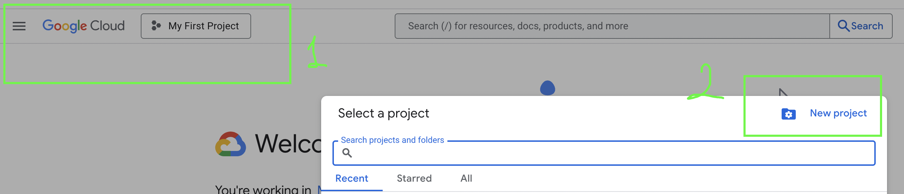
Adım 2 – Gerekli API’leri Etkinleştir
- Menüden APIs & Services → Enable APIs and Services yolunu izleyin.
- Buradan kullanacağınız servisleri arayın ve enable yapın:
- Google Sheets API
- Google Drive API
- (İhtiyacınıza göre Calendar veya Gmail de açabilirsiniz.)
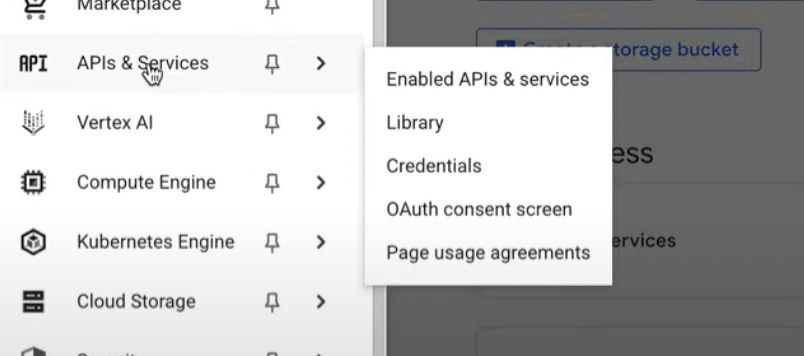
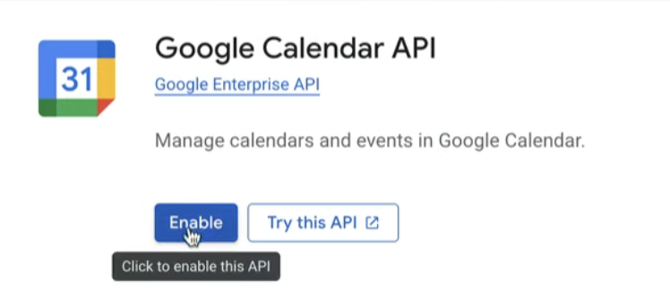
Adım 3 – OAuth Consent Screen Hazırla
Şimdiye kadar n8n’de bir credential oluşturduk ve içine Google’dan aldığımız bilgileri koyduk. Ama Google hâlâ “Bu uygulama kimdir?” diye soruyor. İşte burada devreye OAuth giriyor.
- Google’a dönün → OAuth ayarlarını tamamlayın.
- Bu ayar sayesinde Google, n8n’i tanıyor ve güveniyor.
- Böylece n8n sizin yerinize Google servislerine bağlanabiliyor.
- APIs & Services → OAuth consent screen sekmesine girin.
- Get Started de, uygulamanıza bir isim verin (ör. _n8n App_).
- Gmail hesabı kullanıyorsanız External, Workspace kullanıyorsanız Internal seçin.
- Destek e-postanızı girin ve kaydedin.
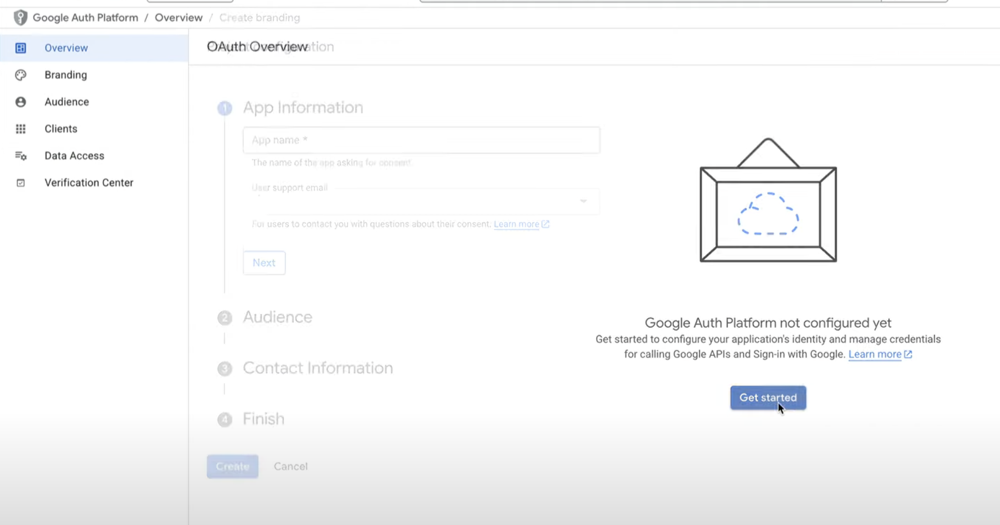
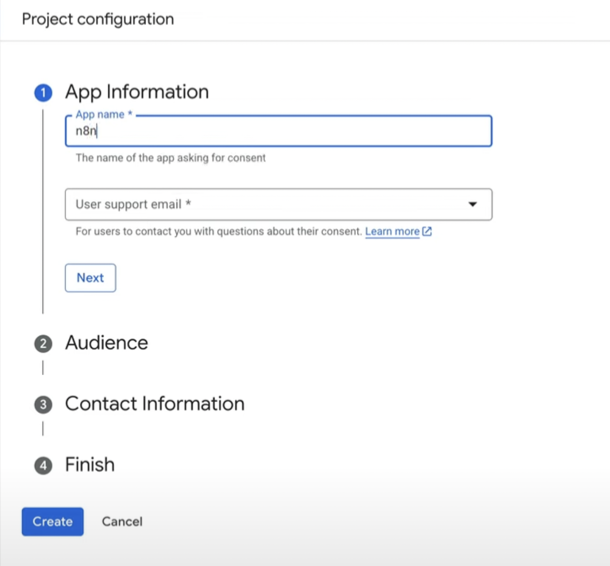
Consent screen ayarlarını tamamladık. Bu ekran sayesinde Google, uygulamanızı gördü ve kullanıcıya hangi izinleri isteyeceğini biliyor. Şimdi sıra Google’ın n8n’i gerçekten tanıyacağı kimlik kartını oluşturmaya geldi: OAuth Client ID.
Adım 4 – OAuth Client ID Oluştur
Google, n8n’i tanımadığı için bir kimlik isteyecektir. Siz Client ID oluşturunca Google n8n’e bir kimlik kartı verir ve n8n bu kartla sizin adınıza işlem yapabilir. Yani OAuth Client ID, Google’a “Bu uygulama benim” demenin yolu. BU ADIM ÇOK ÖNEMLİ!
- Credentials → Create Credential → OAuth Client ID yolunu izleyin.
- Uygulama türü olarak Web Application seçin.
- Bir isim verin (ör. _n8n Client_).
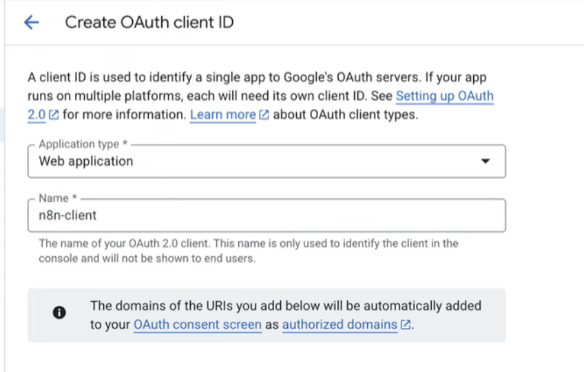
- Redirect URI eklemen gerekiyor:
- Bunun için n8n'e gidin ve yeni bir credential oluştur.
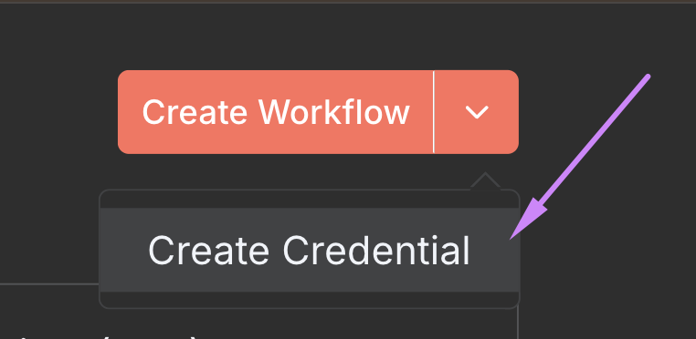
- Bu adımda hangi uygulama için credential oluşturacaksanız onu seçin. Unutmayın her uygulama için ayrı seçim yapmanız gerekiyor.
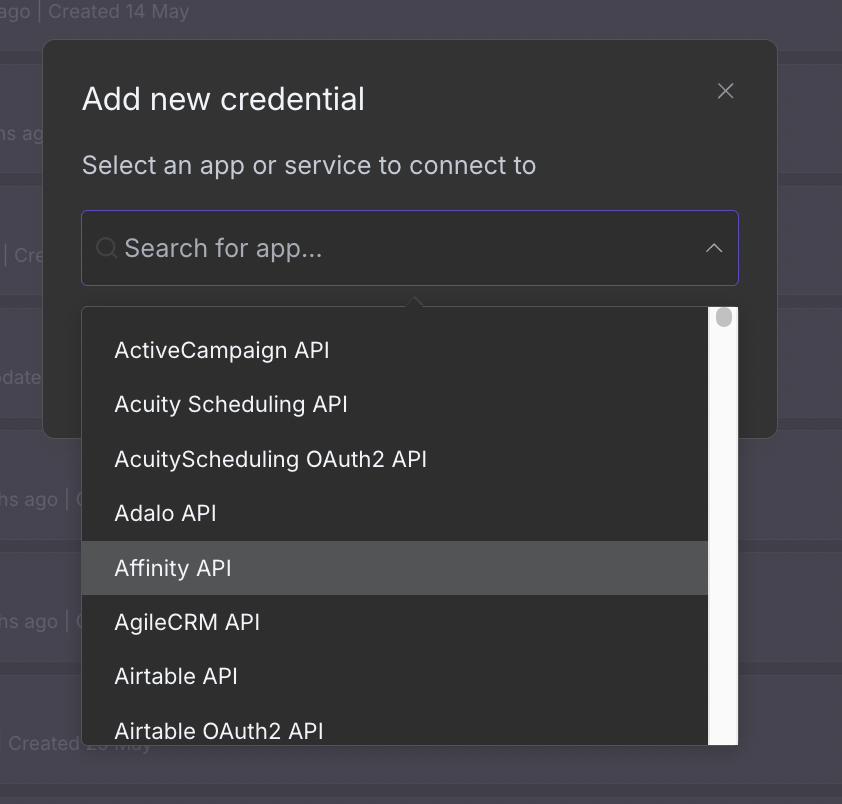
-
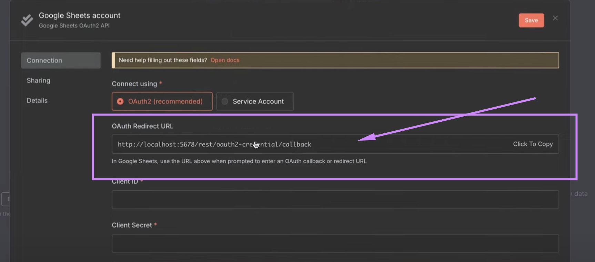
-
- Orada çıkan Redirect URL’yi kopyalayın, Google Console’daki alana yapıştırın.
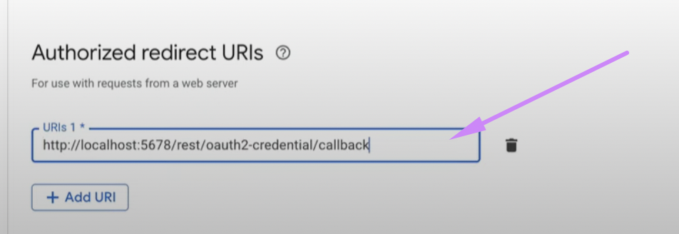
- Create de → size Client ID ve Client Secret verecek. bunu kopyalayın.
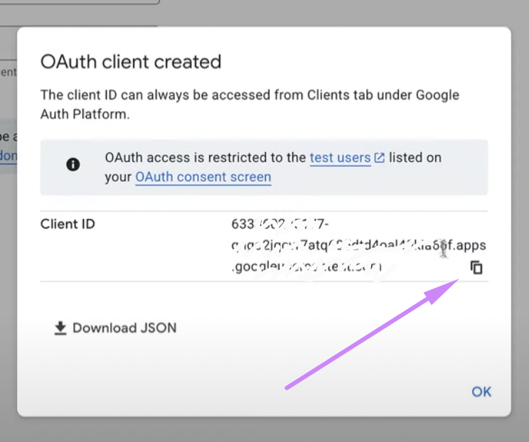
Adım 5 – Bilgileri n8n’e Gir
- n8n’de Google Credential ekranına dönün.
- Client ID değerini yapıştırın.
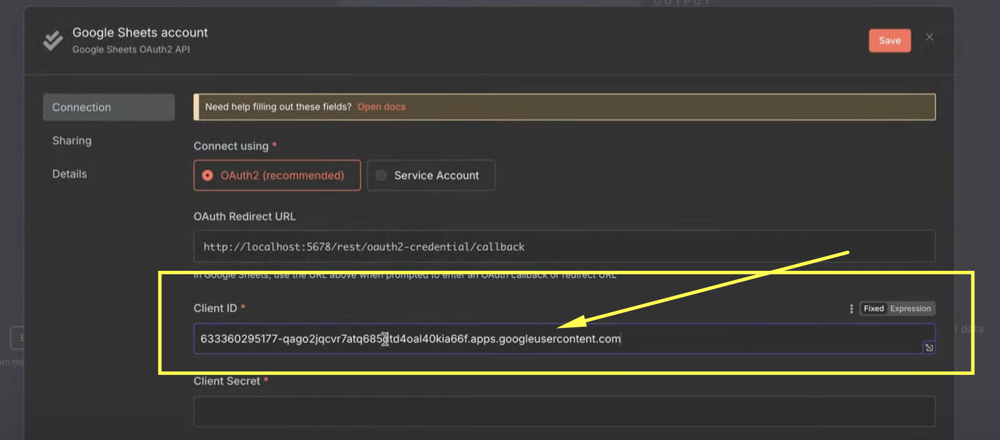
- Client Secret değerini almak için console'da clients sayfasına geri dönün ve secret key'i kopyalayın.
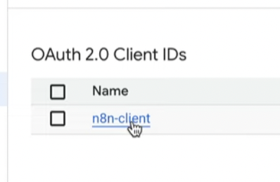
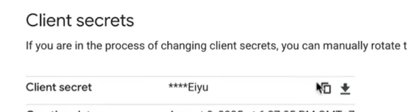
- - n8n’de Google Credential ekranına dönün.
- Client Secret değerini yapıştırın.
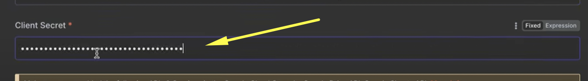
- Kaydet.
Not:
- OAuth yöntemi, Google’ın belirlediği kural kitabıdır.
- Credential, bu kurala göre hazırlanmış anahtar kutusudur.
Yani ikisi ayrı şeydir ama birbirini tamamlar.
Adım 6 – Google ile Bağlan
- Credential ekranında Sign in with Google butonuna basın.
- Google hesabınızla giriş yapın → izinleri seçin.
- İlk girişte “application blocked” hatası alabilirsiniz (çünkü uygulama test modunda).
-
- Çözüm: Google Console’da uygulamanızı Publish App yap.
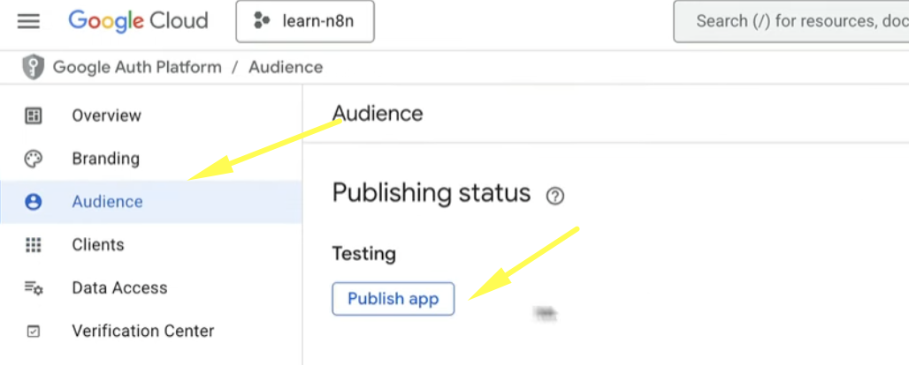
Adım 7 – Bağlantıyı Test Et
- Tekrar giriş yaptığınızda bağlantı başarılı olacak. Bazen biraz beklemeniz gerekebilir. Endişe etmeyin. Genellikle 10 dakika içinde bağlantı kurabiliyorsunuz.
- Artık n8n’den Google Sheets oluşturabilir, Drive’daki dosyaları yönetebilir ya da Gmail üzerinden otomatik e-posta gönderebilirsin. Unutmayın her servis için yeni bir credential oluşturman gerekiyor. Google Sheets için oluşturduğunuz credential, Calendar uygulaması için çalışmaz :)
2. OpenAI ChatGPT
n8n’de ChatGPT’yi kullanabilmek için OpenAI API anahtarını (API Key) almak ve bunu n8n’e credential olarak eklemek gerekiyor. Böylece n8n, ChatGPT ile konuşabilir ve sizin workflow’larınızın içinde metin üretebilir.
Not: API Key, ChatGPT’ye erişmek için size verilen gizli anahtardır. Bu anahtar olmadan n8n ChatGPT’ye bağlanamaz.
Adım 1 – Yeni Credential Oluştur
- n8n anasayfasında Credential bölümüne gel.
-
- Create New Credential seçeneğine tıklayın.
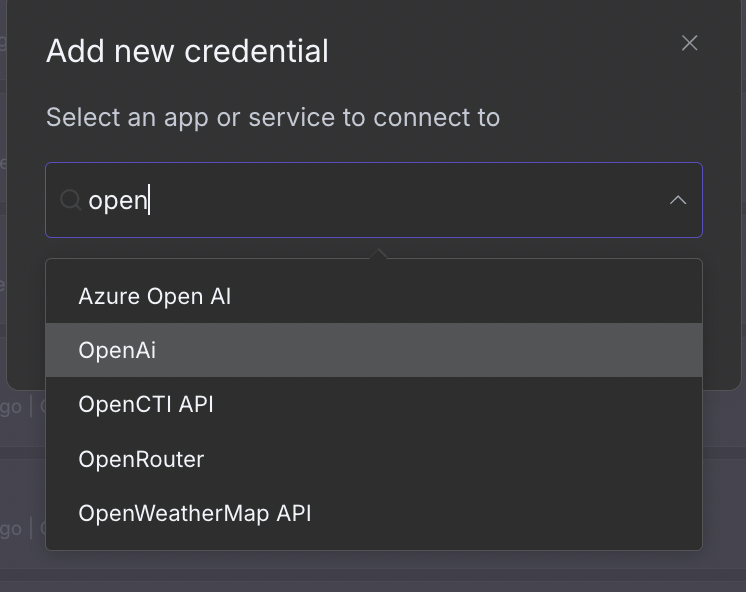
- Burada senden OpenAI API anahtarı istenecek.
Adım 2 – OpenAI API Key Al
- platform.openai.com adresine gidin. (Uygulamanın sayfası değil, işlerin arkaplanı burası.)
- Hesabınıza giriş yapın (yoksa ücretsiz bir hesap aç).
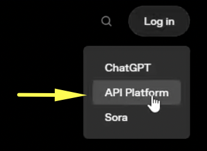
- Sağ üstteki profil simgesine tıklayın → View API keys menüsüne girin.
- Eğer daha önce oluşturmadıysanız Create new secret key seçin.
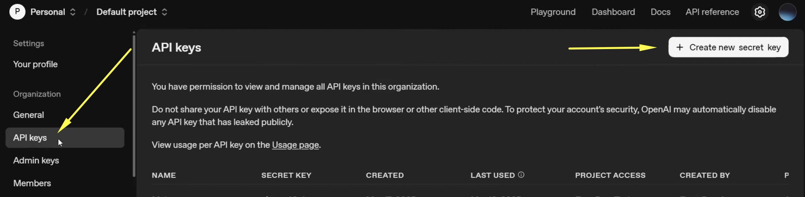
- Anahtara bir isim verin (ör. _n8n ChatGPT Key_).
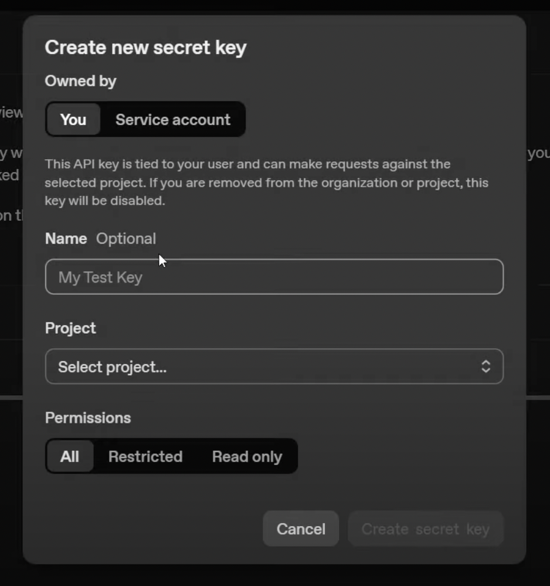
-
- Create secret key dedikten sonra çıkan uzun anahtarı kopyalayın. ⚠️ Bu anahtar yalnızca bir kez gösterilir. Ve kimse ile paylaşmaman gerekir. Aksi takdirde bir gün uyandığında tüm paranın başkaları tarafından harcandığını görebilirsiniz.
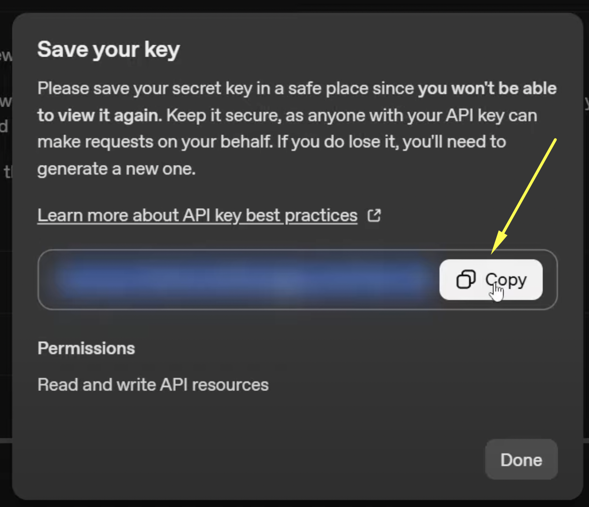
Adım 3 – API Key’i n8n’e Yapıştır
- Tekrar n8n’e dönün.
- Credential ekranındaki ilgili alana API key’i yapıştırın.
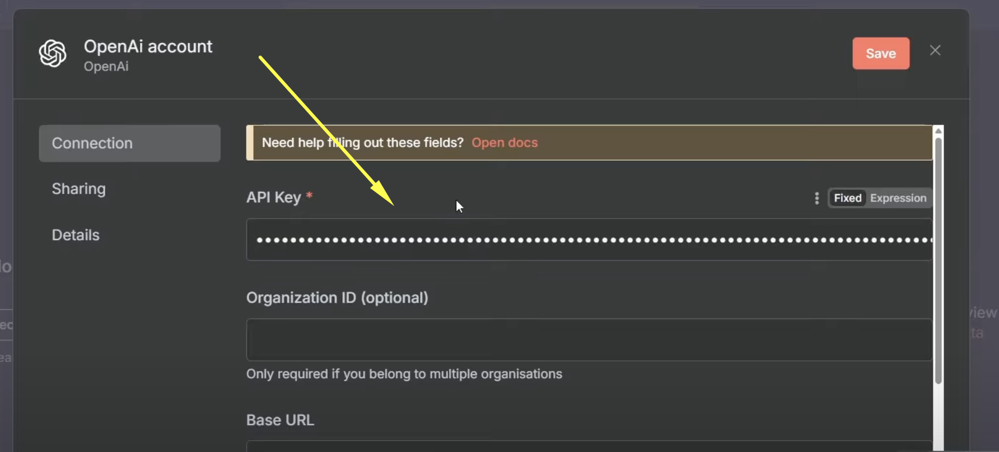
- Save de.
- Bağlantı başarılıysa yeşil bir onay kutusu görürsün.
Adım 4 – Bütçe
- Eğer “insufficient quota” hatası alırsan bu, hesabında kredi olmadığını gösterir.
- OpenAI hesabında Billing bölümüne gidin → kredi ekleyin.
- Tekrar denediğinde başarılı şekilde yanıt alacaksınız.
- 10$’lık kredi, küçük projeler için uzun süre yeterlidir.
- Fiyatlandırmayı görmek için OpenAI Pricing sayfasını kontrol edin.
Artık ChatGPT’yi n8n workflow’una bağladınız ✅ -> Bundan sonra ChatGPT, n8n’in içinde sizin robot yardımcınız gibi çalışacak. Ona sorular sorabilir, metin yazdırabilir veya otomatik yanıtlar oluşturabilirsiniz.
3. KIE AI: Burada Erişebilirsiniz
KIE AI, tek bir API anahtarıyla onlarca farklı görsel, video ve müzik modeli kullanmanı sağlar. Normalde her model için ayrı ayrı API key almak gerekirken, KIE AI sayesinde hepsine tek noktadan erişebilirsiniz. Üstelik çok uygun fiyatlı olduğu için içerik üretiminde hızlı ve ucuz denemeler yapabilmek mümkün.
Adım 1 – Hesap Oluştur
- kie.ai adresine gidin.
- Google hesabınızla veya e-posta ile ücretsiz kayıt olun.
- İlk kayıt olunduğunda küçük bir deneme kredisi verilir, hemen test edebilirsiniz.
Adım 2 – API Key Al
- KIE AI panelinde API Keys bölümüne girin.
- Create API Key seçeneğine tıklayın.
- API key için bir isim verin (ör. _n8n KIE Key_).
⚠️ Bu anahtar yalnızca bir kez gösterilir, mutlaka güvenli bir yere kaydedin.
- Create de → uzun bir anahtar çıkacak.
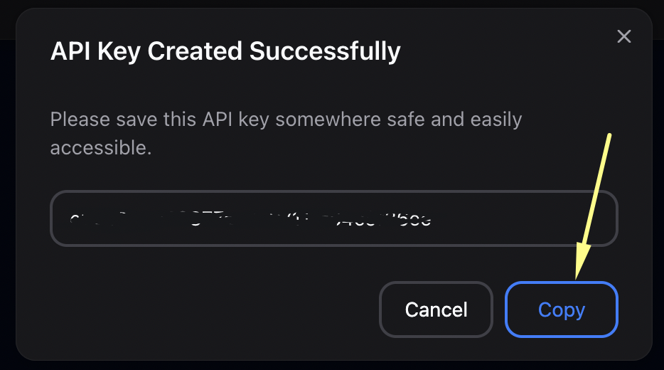
Adım 3 – n8n’de Credential Oluştur
- n8n’de Credentials → Create New Credential yolunu izleyin.
- Servis olarak Header Auth (manual bağlantı için) seçin.
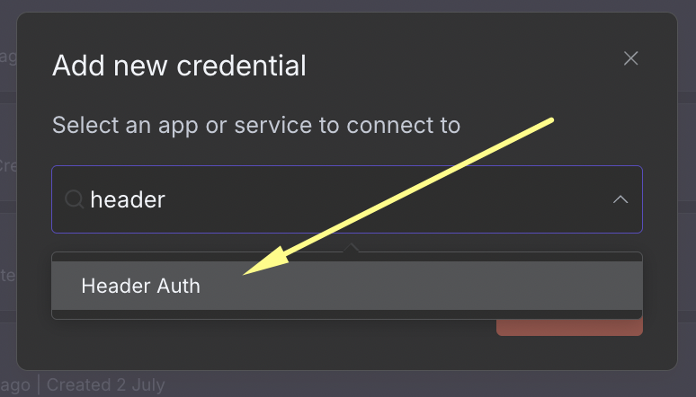
👉 Örnek: Bearer e9ehh93745ddgefddfk
- Name bölümüne "Authorization" yazın.
- Value alanına
Beareryazın, yanına bir boşluk bırak ve hemen ardından kendi API Key’inizi ekleyin.
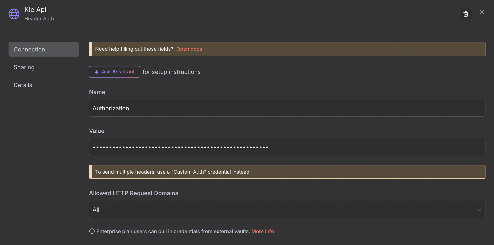
- Kaydet.
Artık KIE AI’yı n8n’e bağladınız ✅ Bundan sonra tek bir API key ile:
- Görseller oluşturabilir,
- Videolar üretebilir veya düzenleyebilir,
- Gerekirse müzik modellerini bile kullanabilirsiniz.
KIE AI’nin avantajı, tüm modelleri tek anahtardan yönetebilmen. Yani MidJourney, Runway, VO3 gibi farklı servisler için ayrı ayrı hesap açmana gerek yok.
4. Fal AI
Fal AI, 600’den fazla görsel, video, ses ve müzik modeline tek bir API ile erişmeni sağlar. Özellikle görselleri videoya dönüştürmek için kullanılır.
n8n’de kullanabilmek için bir API Key oluşturup bunu credential olarak eklemen gerekir.
Adım 1 – API Key Oluştur
- fal.ai hesabınıza giriş yapın.
- Sağ üstteki API Keys bölümüne gidin.
- Create API Key butonuna basın.
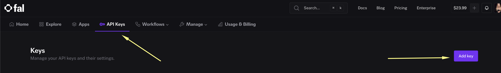
- Anahtarınızı kopyalayın → güvenli bir yere kaydedin. (size yalnızca bir kez gösterilir.)
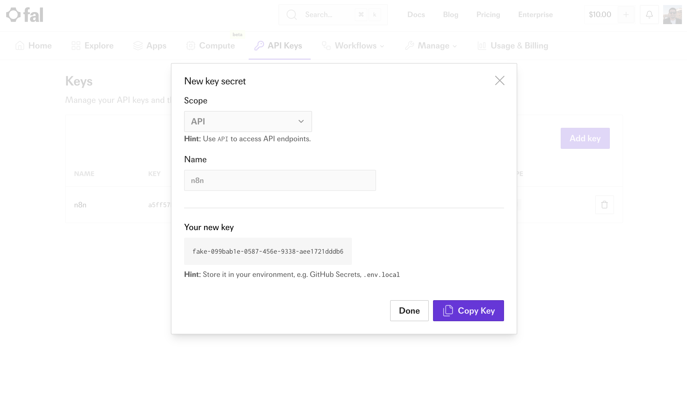
Adım 2 – n8n’de Credential Oluştur
- n8n’de Credentials → Create New Credential yolunu izleyin.
- Generic Credential Type seçin.
- Açılan listeden Header Auth seçin.
- + Create new credential de.
Şu değerleri girin:
- Name:
Authorization
👉 Örnek: Key 9dj32f8sd9f23jsdf...
- Value:
Keyyazın, ardından bir boşluk bırak ve kendi API Key’inizi ekleyin.
- Save diyerek kaydedin.
- Artık n8n, Fal AI ile bağlanmaya hazır.
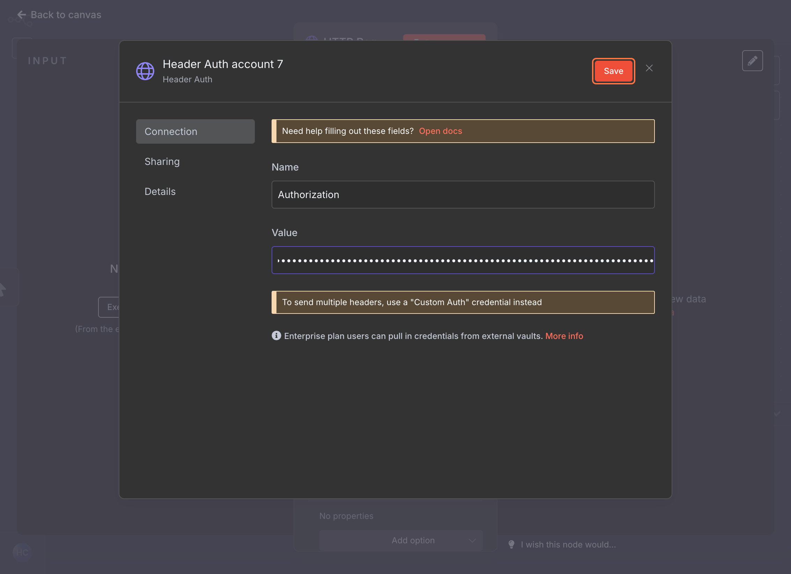
🎁 Bonus: Auth Değerleri Neden Farklı?
API anahtarını n8n’de girerken bazen Bearer, bazen Key, bazen de hiçbir şey yazmıyoruz. Peki neden?
Her servis, güvenlik sisteminizi biraz farklı tasarlıyor:
- Bearer → Servis “bu bir kimlik kartıdır” demek için başına _Bearer_ koymamızı ister.
- Key → Bazı servisler “anahtar” kelimesini önde görmek ister.
- Hiçbir şey → Bazıları ise doğrudan anahtarı kabul eder, ekstra ibare istemez.
👉 Yani burada bir yanlışlık yok. Sadece her API’nin “şifreyi sunma şekli” farklı. Biz de n8n’de, servisin istediği formata göre Value kısmını dolduruyoruz.
Peki biz hangisini yazacağımızı nasıl bileceğiz? Bunun cevabı için her zaman ilgili servis sağlayıcının resmi dökümantasyonuna bakmamız gerekir. Orada hangi formatı istedikleri net şekilde yazar.
Sık Kullandığımız Authenticationlar
n8n’de birçok farklı servisle bağlantı kurabiliriz ama bazılarını diğerlerinden çok daha sık kullanıyoruz. Bu bölümde, en çok ihtiyaç duyacağımız ve pratikte tekrar tekrar karşımıza çıkacak olan authentication ayarlarını öğreneceğiz.
Adımlar ilk bakışta karmaşık görünebilir ama endişelenme: bir kez kurduktan sonra bu bilgileri sürekli kullanabileceksin.
İşleyeceğimiz başlıca servisler:
- Google Cloud Console (Drive, Sheets vb.)
- OpenAI ChatGPT
- Kie AI
- Fal AI
1. Google Cloud Console (Drive, Gsheet vb.)
Google servislerini (Drive, Sheets, Gmail, Calendar vb.) n8n’de kullanabilmek için önce Google Cloud Console üzerinden OAuth2 kimlik doğrulaması ayarlamamız gerekiyor. Bu işlem sayesinde n8n, sizin adınıza Google’a bağlanıp veri okuyabilir ya da içerik oluşturabilir.
İlk bakışta adımlar fazla görünebilir ama bir kez ayarladıktan sonra tekrar tekrar kullanabilirsiniz.
Adım 1 – Proje Oluştur
- cloud.google.com’a gidin ve hesabınıza giriş yapın.
- Sol üstteki Project menüsünden → New Project seçin → isim verin ve Create’e tıklayın.
- Birkaç saniye içinde proje hazır olacak.
Adım 2 – Gerekli API’leri Etkinleştir
- Menüden APIs & Services → Enable APIs and Services yolunu izleyin.
- Buradan kullanacağınız servisleri arayın ve enable yapın:
- Google Sheets API
- Google Drive API
- (İhtiyacınıza göre Calendar veya Gmail de açabilirsiniz.)
Adım 3 – OAuth Consent Screen Hazırla
Şimdiye kadar n8n’de bir credential oluşturduk ve içine Google’dan aldığımız bilgileri koyduk. Ama Google hâlâ “Bu uygulama kimdir?” diye soruyor. İşte burada devreye OAuth giriyor.
- Google’a dönün → OAuth ayarlarını tamamlayın.
- Bu ayar sayesinde Google, n8n’i tanıyor ve güveniyor.
- Böylece n8n sizin yerinize Google servislerine bağlanabiliyor.
- APIs & Services → OAuth consent screen sekmesine girin.
- Get Started de, uygulamanıza bir isim verin (ör. _n8n App_).
- Gmail hesabı kullanıyorsanız External, Workspace kullanıyorsanız Internal seçin.
- Destek e-postanızı girin ve kaydedin.
Consent screen ayarlarını tamamladık. Bu ekran sayesinde Google, uygulamanızı gördü ve kullanıcıya hangi izinleri isteyeceğini biliyor. Şimdi sıra Google’ın n8n’i gerçekten tanıyacağı kimlik kartını oluşturmaya geldi: OAuth Client ID.
Adım 4 – OAuth Client ID Oluştur
Google, n8n’i tanımadığı için bir kimlik isteyecektir. Siz Client ID oluşturunca Google n8n’e bir kimlik kartı verir ve n8n bu kartla sizin adınıza işlem yapabilir. Yani OAuth Client ID, Google’a “Bu uygulama benim” demenin yolu. ➡️ BU ADIM ÇOK ÖNEMLİ!
- Credentials → Create Credential → OAuth Client ID yolunu izleyin.
- Uygulama türü olarak Web Application seçin.
- Bir isim verin (ör. _n8n Client_).
- Redirect URI eklemen gerekiyor:
- Bunun için n8n'e gidin ve yeni bir credential oluştur.
- Bu adımda hangi uygulama için credential oluşturacaksanız onu seçin. Unutmayın her uygulama için ayrı seçim yapmanız gerekiyor.
- Orada çıkan Redirect URL’yi kopyalayın, Google Console’daki alana yapıştırın.
- Create de → size Client ID ve Client Secret verecek. bunu kopyalayın.
Adım 5 – Bilgileri n8n’e Gir
- n8n’de Google Credential ekranına dönün.
- Client ID değerini yapıştırın.
- Client Secret değerini almak için console'da clients sayfasına geri dönün ve secret key'i kopyalayın.
- n8n’de Google Credential ekranına dönün.
- Client Secret değerini yapıştırın.
- Kaydet.
Not:
- OAuth yöntemi, Google’ın belirlediği kural kitabıdır.
- Credential, bu kurala göre hazırlanmış anahtar kutusudur.
Yani ikisi ayrı şeydir ama birbirini tamamlar.
Adım 6 – Google ile Bağlan
- Credential ekranında Sign in with Google butonuna basın.
- Google hesabınızla giriş yapın → izinleri seçin.
- İlk girişte “application blocked” hatası alabilirsiniz (çünkü uygulama test modunda).
- Çözüm: Google Console’da uygulamanızı Publish App yap.
Adım 7 – Bağlantıyı Test Et
- Tekrar giriş yaptığınızda bağlantı başarılı olacak.
- Bazen biraz beklemeniz gerekebilir. Endişe etmeyin. Genellikle 10 dakika içinde bağlantı kurabiliyorsunuz.
- Artık n8n’den Google Sheets oluşturabilir, Drive’daki dosyaları yönetebilir ya da Gmail üzerinden otomatik e-posta gönderebilirsin.
- Unutmayın: Her servis için yeni bir credential oluşturman gerekir. Google Sheets için oluşturduğunuz credential, Calendar için çalışmaz.
2. OpenAI ChatGPT
n8n’de ChatGPT’yi kullanabilmek için OpenAI API anahtarını (API Key) almak ve bunu n8n’e credential olarak eklemek gerekiyor. Böylece n8n, ChatGPT ile konuşabilir ve sizin workflow’larınızın içinde metin üretebilir.
Not: API Key, ChatGPT’ye erişmek için size verilen gizli anahtardır. Bu anahtar olmadan n8n ChatGPT’ye bağlanamaz.
Adım 1 – Yeni Credential Oluştur
- n8n anasayfasında Credential bölümüne gel.
- Create New Credential seçeneğine tıklayın.
- Burada senden OpenAI API anahtarı istenecek.
Adım 2 – OpenAI API Key Al
- platform.openai.com adresine gidin.
- Hesabınıza giriş yapın (yoksa ücretsiz hesap aç).
- Sağ üstteki profil simgesine tıklayın → View API keys menüsüne girin.
- Daha önce oluşturmadıysanız Create new secret key seçin.
- Anahtara bir isim verin (ör. _n8n ChatGPT Key_).
⚠️ Bu anahtar yalnızca bir kez gösterilir, mutlaka güvenli bir yere kaydedin.
- Create secret key de → çıkan uzun anahtarı kopyalayın.
Adım 3 – API Key’i n8n’e Yapıştır
- Tekrar n8n’e dönün.
- Credential ekranındaki alana API key’i yapıştırın.
- Save de.
- Bağlantı başarılıysa yeşil bir onay kutusu görürsün.
Adım 4 – Bütçe
- Eğer “insufficient quota” hatası alırsan bu, hesabında kredi olmadığını gösterir.
- OpenAI hesabında Billing bölümüne gidin → kredi ekleyin.
- Tekrar denediğinde başarılı şekilde yanıt alacaksınız.
- 10$ kredi, küçük projeler için uzun süre yeterlidir.
- Fiyatlandırma için OpenAI Pricing sayfasına bak.
Artık ChatGPT’yi n8n workflow’una bağladınız ✅ Bundan sonra ChatGPT, n8n’in içinde sizin robot yardımcınız gibi çalışacak:
- Otomatik cevaplar üretebilir
- Metin özetleyebilir
- Yeni içerikler oluşturabilir
3. KIE AI
KIE AI, tek bir API anahtarıyla onlarca farklı görsel, video ve müzik modeli kullanmanı sağlar. Normalde her model için ayrı ayrı API key almak gerekirken, KIE AI sayesinde hepsine tek noktadan erişebilirsiniz. Üstelik uygun fiyatlı olduğu için içerik üretiminde hızlı ve ucuz denemeler yapabilmek mümkün.
Adım 1 – Hesap Oluştur
- kie.ai adresine gidin.
- Google hesabınızla veya e-posta ile ücretsiz kayıt olun.
- İlk kayıt olunduğunda küçük bir deneme kredisi verilir.
Adım 2 – API Key Al
⚠️ Bu anahtar yalnızca bir kez gösterilir, mutlaka güvenli bir yere kaydedin.
- KIE AI panelinde API Keys bölümüne girin.
- Create API Key seçeneğine tıklayın.
- API key için bir isim verin (ör. _n8n KIE Key_).
- Create de → uzun bir anahtar çıkacak.
Adım 3 – n8n’de Credential Oluştur
- n8n’de Credentials → Create New Credential yolunu izleyin.
- Servis olarak Header Auth seçin.
👉 Örnek: Bearer e9ehh93745uhfddfk
- Name bölümüne
"Authorization"yazın. - Value alanına
Beareryazın, yanına bir boşluk bırak ve API Key’inizi ekleyin.
- Kaydet.
Artık KIE AI’yı n8n’e bağladınız ✅ Bundan sonra tek bir API key ile:
- Görseller oluşturabilir
- Videolar üretebilir veya düzenleyebilir
- Müzik modellerini kullanabilirsiniz
KIE AI’nin avantajı, tüm modelleri tek anahtardan yönetebilmen. Yani MidJourney, Runway, VO3 gibi farklı servisler için ayrı ayrı hesap açmana gerek yok.
4. Fal AI
Fal AI, 600’den fazla görsel, video, ses ve müzik modeline tek bir API ile erişmeni sağlar. Özellikle görselleri videoya dönüştürmek için sıkça kullanılır.
n8n’de kullanabilmek için bir API Key oluşturup bunu credential olarak eklemen gerekir.
Adım 1 – API Key Oluştur
- fal.ai hesabınıza giriş yapın.
- Sağ üstteki API Keys bölümüne gidin.
- Create API Key butonuna basın.
⚠️ Bu anahtar yalnızca bir kez gösterilir.
- Anahtarınızı kopyalayın → güvenli bir yere kaydedin.
Adım 2 – n8n’de Credential Oluştur
- n8n’de Credentials → Create New Credential yolunu izleyin.
- Generic Credential Type seçin.
- Açılan listeden Header Auth seçin.
- + Create new credential de.
Şu değerleri girin:
👉 Örnek: Key 9dj32f8sd9f23jsdf...
- Name:
Authorization - Value:
Keyyazın, ardından bir boşluk bırak ve kendi API Key’inizi ekleyin.
- Save diyerek kaydedin.
- Artık n8n, Fal AI ile bağlanmaya hazır.
🎁 Bonus: Auth Değerleri Neden Farklı?
API anahtarını n8n’de girerken bazen Bearer, bazen Key, bazen de hiçbir şey yazmıyoruz. Peki neden?
Her servis, güvenlik sisteminizi biraz farklı tasarlıyor:
- Bearer → Servis, “bu bir kimlik kartıdır” demek için başına _Bearer_ koymamızı ister.
- Key → Bazı servisler “anahtar” kelimesini önde görmek ister.
- Hiçbir şey → Bazıları ise doğrudan anahtarı kabul eder.
👉 Yani burada bir yanlışlık yok. Sadece her API’nin “şifreyi sunma şekli” farklı. Biz de n8n’de, servisin istediği formata göre Value kısmını dolduruyoruz.
Peki biz hangisini yazacağımızı nasıl bileceğiz? Bunun cevabı için her zaman ilgili servis sağlayıcının resmi dökümantasyonuna bakmalıyız. Orada hangi formatı istedikleri net şekilde belirtilir.
Nefise Bora tarafından hazırlandı
Eğitim, n8n otomasyonları ve yapay zekâ destekli iş akışlarıyla ilgili bağlantıda kalmak için LinkedIn üzerinden ulaşabilirsiniz.